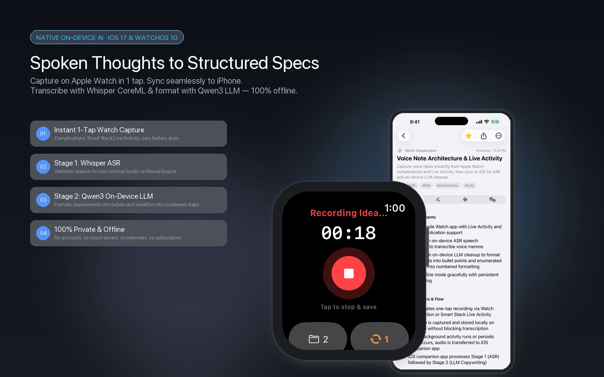
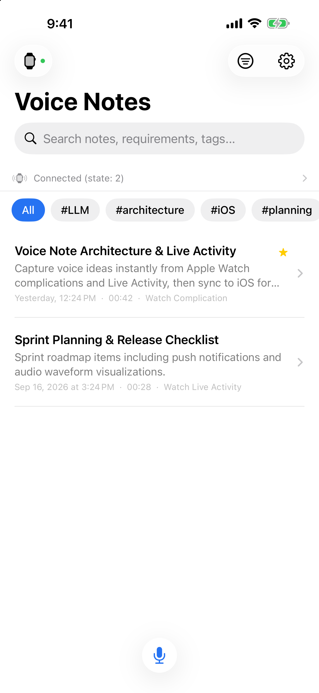
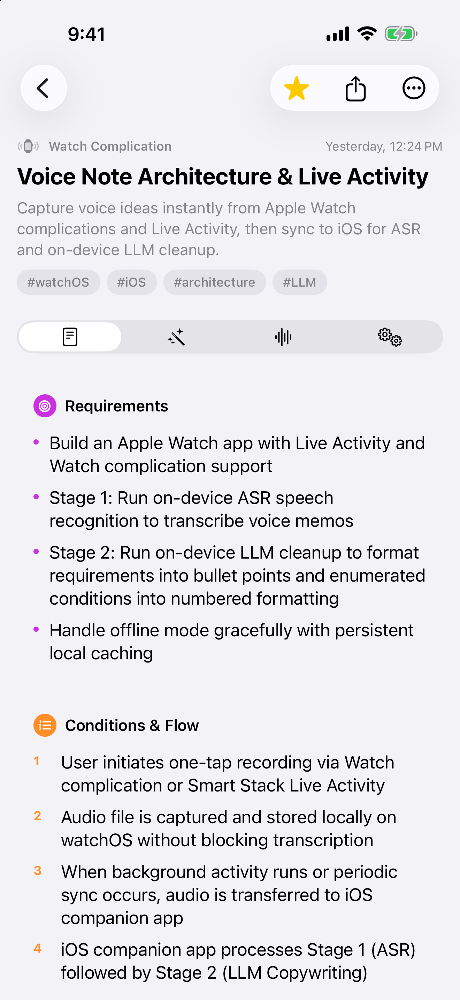
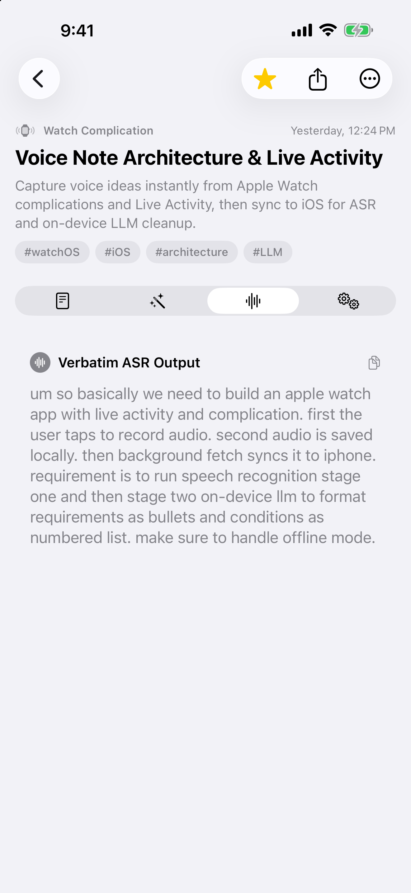
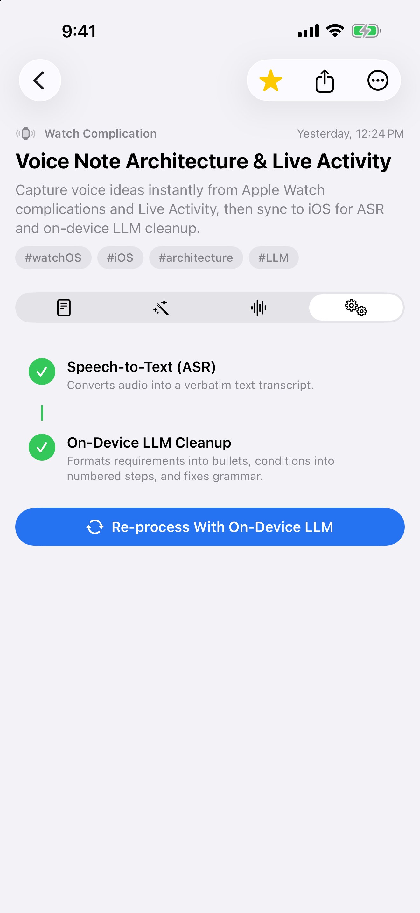
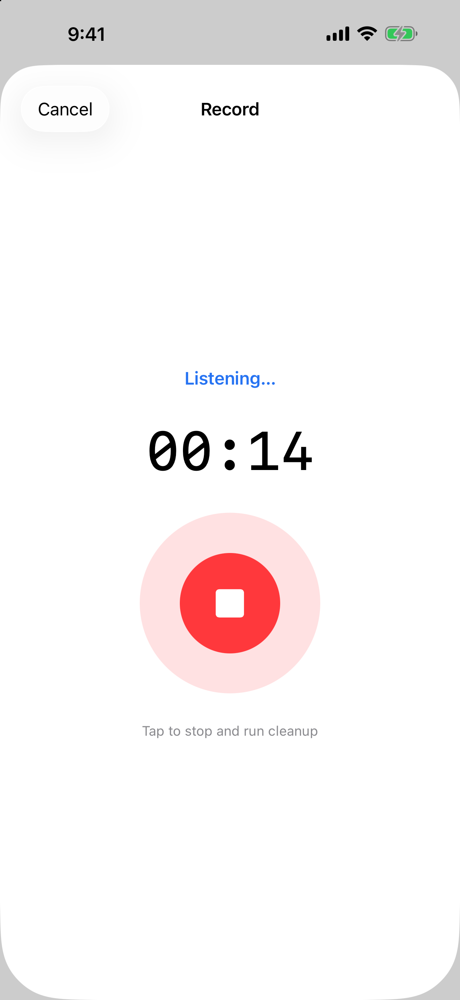
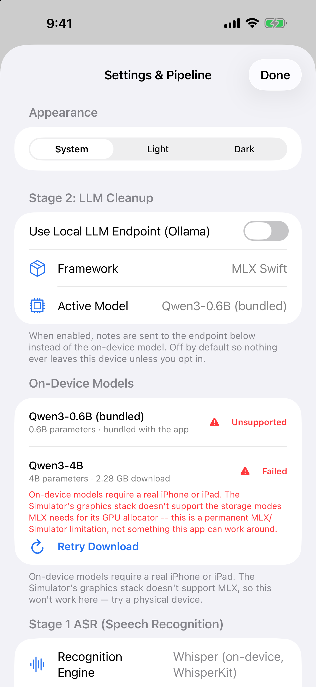

Capture voice ideas in 1 tap on Apple Watch or iPhone. Transcribe with Whisper CoreML and transform stream-of-consciousness memos into engineering-grade Markdown specs, bullet requirements, and action items — 100% offline.

No accounts, no cloud APIs, no subscriptions. Everything runs directly on your Apple hardware.
Tap a complication on any watch face (circular, corner, rectangular, inline) or Smart Stack Live Activity. Records immediately to local watch flash storage with zero battery drain.
On-device OpenAI Whisper (WhisperKit CoreML) transcribes audio into verbatim text with exceptional punctuation, casing, and acoustic fidelity directly on Apple Neural Engine.
Qwen3 via MLX Swift Metal GPU extracts structured JSON: converts requirements into bullets, workflows into numbered sequences, to-dos into checklists, and tags domains.
Your voice notes and thoughts never leave your device. Zero telemetry, zero external servers, zero advertising tracking. Works completely offline anywhere in the world.
Listen back to original audio with an interactive waveform visualizer, timestamp scrub controls, duration counter, and playback speed adjustments.
Ships with bundled Qwen3-0.6B (ready offline from launch), optional Qwen3-4B downloadable in Settings, and full support for private local Ollama endpoints.
How spoken stream-of-consciousness audio becomes polished technical specs.
The companion app receives raw AAC audio from Apple Watch or direct iPhone recording. WhisperKit runs OpenAI's Whisper model fully on-device to produce a verbatim transcript without missing technical jargon.
Qwen3 processes the raw text locally via Apple Metal GPU acceleration. It identifies requirements (bullets), sequential execution rules (numbers), action items (checklists), and tags, assembling them into clean Markdown.
Capture while driving, walking, or away from your phone. WatchConnectivity background fetch transfers audio automatically when near.
Explore the clean, native iOS and watchOS interfaces.






Unlike cloud assistants that harvest voice data for server training, Voxbrief runs Whisper and Qwen3 directly on your device hardware. No telemetry, no remote storage, and no tracking — guaranteed.
Read Our Privacy Policy